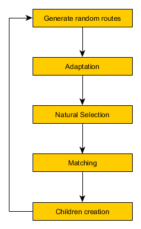
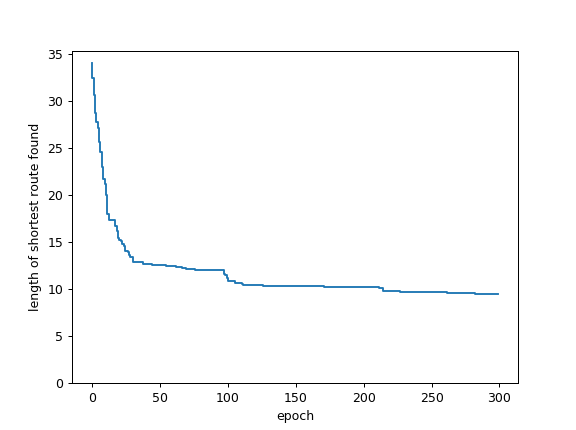

Darwin Approach to Traveling Salesman
Posted on Sat 12 January 2019 in Posts • 6 min read
- How this post was created?
- Traveling Salesman Problem (TSP)
- Initial note
- Solution outline
- Evolution in action
- Conclusion
- Credits
- TODO
How this post was created?
During my Christmas break I found blog post from Peter Brookes-Smith Darwin and The Traveling Salesperson. He wrote, that he was looking for some project for his holidays. He found the blog post that inspired him to start the project and solve the problem by himself without finishing the article. It was similar to my case. I had genetic algorithms in the back of my head for the long, long time. Now while having some spare time between Christmas and New Year - I decided to get my feed wet on that topic.
Traveling Salesman Problem (TSP)
The problem can be defined like this: having list of cities and finding the shortest route for salesman to visit each of them once and come back to the starting place.
For non-trivial cases of few cities, computational complexity for brute force search is high. The total number of unique routes (TNUR) is: TNUR = 1/2*(n-1)!
To help grasping the order of complexity - when number of cities grows beyond ~25, time required to brute force search for optimal solution would exceed age of known universe.
The traveling salesman is a beautiful problem to test various optimization algorithms against it. The big portion of metaheuristic solutions came from the evolution algorithm family.
Initial note
This post is recording of almost naive attempt to apply evolution approach to solve the problem. Before writing this post, on purpose, I haven't done solid education on genetic algorithms so the terminology and methods might not correspond to ones established in the field. The positive side of this approach is that fun was not spoiled with existing solutions. This I meant as fun project not the conference paper. When the disclaimer was done, let's go to the problem solving.
Solution outline
The idea for finding the best route using mechanisms that are available in nature in evolution process described by Karol Darwin is as follows: Algorithm initialization: 1. Draw initial population of solutions - set of random routes (e.g. 500 routes). then, in the loop run epochs of evolution steps; 2. Adaptation - corresponds to minor improvements that organism is able to implement in order to better fit to the environment; 3. Natural selection - corresponds to challenges, threads posted by nature that strong organisms are able to handle and survive and weak units are lost; 4. Matching for reproduction - match members of the population in pairs to prepare for the reproduction 5. Create children - new organisms are born and their genome (route)consist of parts of routes coming from both parents (crossover mechanism). Add mutation to introduce further variation in the population; 6. Repeat the cycle - go to step 1, start new epoch.

Figure 1. Steps of evolution algorithm
Adaptation
I decided to include mechanism for minor, local improvements that in nature, organisms might be able to perform to better fit to the environment. The implementation of the adaptation is twofolds: 1. Swap two consecutive cities on the list that represents the route and check if the change brought an improvement - if so, keep the change and check another pair of cities until the end of the list. 2. Reverse three elements route segments and similarly, as in previous method - keep the change if the new, candidate route with reversed segment is shorter than version with non-reversed segment. Both are implemented "swapper" or "reverser" as moving along the list of cities in the route.
Natural selection
Natural selection allows to remove poor solutions and make room for new experimental variants of routes that inherit features from best solutions found so far. The implementation was to sort the solutions in the ascending order and keep only 10% of the best solutions.
Matching for the reproduction
"Elite" selected in the natural selection step is then used to create pairs of parents to be used in the single act of reproduction. The pairs were drawn randomly with returning, but the random distribution was not uniform. The shortest route of the solution, the higher chance that solution will be taken as a parent. The probability for selecting the solution was proportional to the inverse of the solution route length i.e. the shorter route - higher probability to be drawn as parent. Given organism could be selected as a pair element for multiple reproductions - which should be the case especially for best fitted solutions (ones with shortest route).
Create children
In the process of reproduction always two children were born: one that was effect of crossover routes from mother and father and second, based on the same crossover but with mutation added. When drawing pairs, organism is assigned to the role of mother or father what is important only for the crossover process.
Crossover
In crossover selected segment of given length (e.g. 5 cities) of the route from father is being injected into mother's route. The starting element of the segment in being found in mother's route, and the mother's route is divided into three parts: before "anchor" element, "anchor" element and after "anchor element. The "anchor" element is replaced by injection. In the next steps mother's route in cleaned up in order to remove duplicate cities (those that appeared in injection from the father). The cities from the injection were remove from the before anchor and from the after anchor part.
Mutation
The children obtained by applying crossover is then duplicated to have second child that will be additionally mutated. Mutation is implemented as the random swap of two cities in the list.
Evolution in action
The whole setup of the experiment is highly parametrized and gives endless opportunities to experiment with various setups. The results shown in this blog were produced for this parametrization:
# number of cities
num_cities = 80
# size of initial population (number of initial random routes)
num_routes = 400
# fraction of organisms that survives natural selection process
survival ratio = 0.1
In the first step of implementation I was able to measure the effect of local adaptation and gains achieved with this mechanism. While running single swap of two elements and single reverse or three elements segment gains on random routes were up to 1%. Graphical representation of the route changes confirms that improvement was small - routes still have high degree of randomness and are far from being optimal.
In the next step I brought this adaptation process to extreme number to check it's potential - what maximum improvements are possible here. Of course achieving stabilization of the results here would be difficult but I verified what will happen when we change number of two- and three elements reversing cycles from 1x to 100x times. The improvements achieved in this configuration were XX in average.
The next step involved full process and proved crossover and mutation to be efficient for improving solution quality i.e. finding as short route as possible.

Figure 2. Visualization of best route found in each epoch

Figure 3. Length of shortest route found in given epoch of evolution process
Conclusion
- The experiment shown me the beauty of evolutionary approach - directed but random evolution leads to emergence of the order and optimized solutions (however not optimal solutions).
- The fitness of the solution is stabilizing after ~100 epochs. The population doesn't have sufficient new genomes and variation decreases. With this, ability to overcome imperfections in best route found so far drops significantly.
- Being under impression of robustness of the evolutionary system I'm eager to try evaluational approach as alternative to Reinforcement learning such as described on openai blog
- Technical one: even such a side project playing with numerical problem benefits from accompanying tests.Many annoying bugs that appeared during the implementation (mainly from global range of variables), and covering (at least partially) code with tests helped out to progress.
Ideas for future work:
- Deploy it in server-less mode of operation. Route calculations and transformations are great candidates for "lambda" functions.
- Use GPU to compute things in parallel
- Overcome stagnation of evolution by evolving several populations independently and allow for contact between populations from time to time - transfer some solutions from one to another population.
Credits
Cover image from https://commons.wikimedia.org/wiki/File:High_School_Biology_1-13.pdf by CK-12 Foundation on CC license
TODO
[] proofread in Hemmingway [] proofread in Word [] proofread in text [] add nn reference